IEEE YESS 2026, Yearly Engineering Students Summit

One day · 9:00 AM to 5:00 PM IST
19 December2026
Mar Baselios College of Engineering and Technology (Autonomous) Thiruvananthapuram · Organized by IEEE LINK, IEEE Kerala Section
Registration opens soonGet notified
Explore the summit